FLOSS teaching scenarios: predict the response, spot the warning flags
Source:vignettes/floss-03-teaching.Rmd
floss-03-teaching.RmdEach card changes one thing in a stock and asks trainees to predict the response before they see it. FLOSS runs the baseline and the treatment with the same random numbers, so every difference is caused by the treatment. The last card plants a data problem: the task is to find the indicator that is not telling the truth.
The cards use Lutjanus bohar and a single logistic gear (a handline that catches fish from the length at maturity), then add a second gear and a survey. The structure of the course follows the progression of Haddon (2021), Using R for Modelling and Quantitative Methods in Fisheries: simple population dynamics first, then the data, then the models.
library(FLOSS)
sp <- load_species("lutjanus_bohar")
hl <- one_gear_species(sp) # handline only; effort = F/Fmsy
oem <- oem_settings(one_gear_fishery(1), tail = 30, lfd_ess_age = 50,
lfd_ess_len = 500, bio_n = 200, cpue_rho = 0.3)Card 0: the dynamics behind everything
Equilibrium and the real path. The curves show where the stock would settle under constant fishing. Points are the realised years of one simulated history: during the fishing-down phase catches lie above the equilibrium yield, because biomass is being removed. High catches are not proof of sustainability.
om_reef <- build_om(sp, load_fishery("reef_3fleets"), nsim = 5)
plot_eq(om_reef, iter = 1)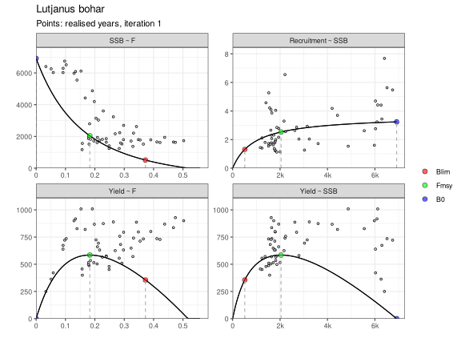
Growth overfishing. The same stock fished with different selectivity. Catching fish before they grow lowers the maximum yield and the F at which it is reached.
plot_eq_selectivity(sp, list(
`small fish (L50 25 cm)` = selectivity("logistic", L50 = 25, L95 = 30),
`at maturity (L50 35 cm)` = selectivity("logistic", L50 = 35, L95 = 42),
`large fish (L50 50 cm)` = selectivity("logistic", L50 = 50, L95 = 58)))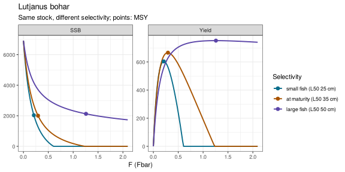
plot_srr(om_reef, iters = 1:3)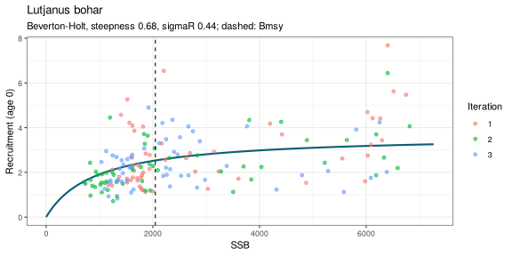
Card 1: light versus hard fishing
Predict first. The same stock is fished at F = 0.5 × Fmsy and at F = 2 × Fmsy for 50 years. For the hard-fished stock, does each of these go up, down or stay the same: spawning biomass, catch, CPUE, mean length in the catch, the share of large fish (Pmega)?
c1 <- run_treatment(hl, one_gear_fishery(0.5),
list(hard = treatment("F = 2 Fmsy", effort = list(
fleet = "handline", from = 1969, mult = 4))),
nsim = 10, oem = oem, iters = 1:5)
plot_treatment(c1)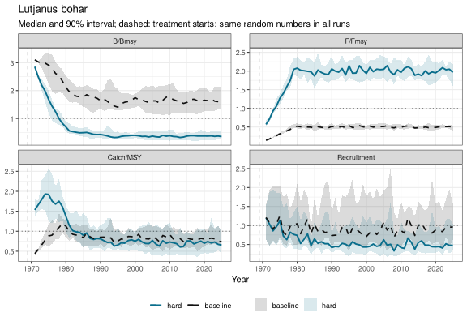
plot_length_indicators(length_indicators(c1, "Lutjanus bohar", source = "handline"))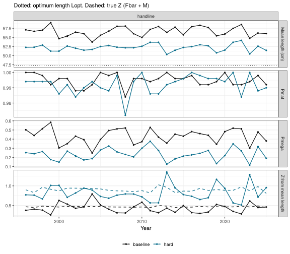
plot_lfd(c1$data$baseline, "Lutjanus bohar", iter = 1, source = "handline")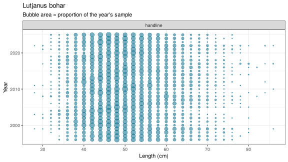
plot_lfd(c1$data$hard, "Lutjanus bohar", iter = 1, source = "handline")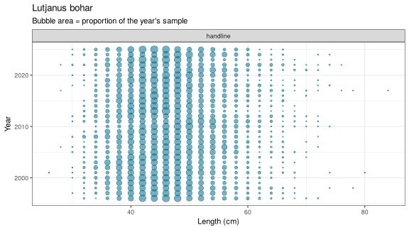
Why. At equilibrium the descending limb of the
length composition is set by mortality relative to growth, Z/k. Higher F
removes fish before they grow large: mean length falls towards the
length of first capture, the tail shortens and Pmega drops. Mean length
gives Z through Beverton and Holt (1956), Z = k (L∞ − L̄)/(L̄ − Lc). Here
selectivity is flat-topped and mortality constant: Z from mean length
follows the true Z (dashed), though somewhat below it. The equilibrium
estimator is approximate: variability in length-at-age and a gradual
(not knife-edge) selectivity bias it. Lines are medians over five
simulated datasets; stat = "all" shows each one.
Card 2: F is cut, but the length data are slow
Predict first. A stock fished at 2 × Fmsy has its F cut to 0.5 × Fmsy in 2000. How many years until mean length and Pmega reach their new level? Is Z from mean length right in 2003?
c2 <- run_treatment(hl, one_gear_fishery(2),
list(cut = treatment("F cut to 0.5 Fmsy in 2000", effort = list(
fleet = "handline", from = 2000, mult = 0.25))),
nsim = 10, oem = oem, iters = 1:5)
plot_length_indicators(length_indicators(c2, "Lutjanus bohar", source = "handline"))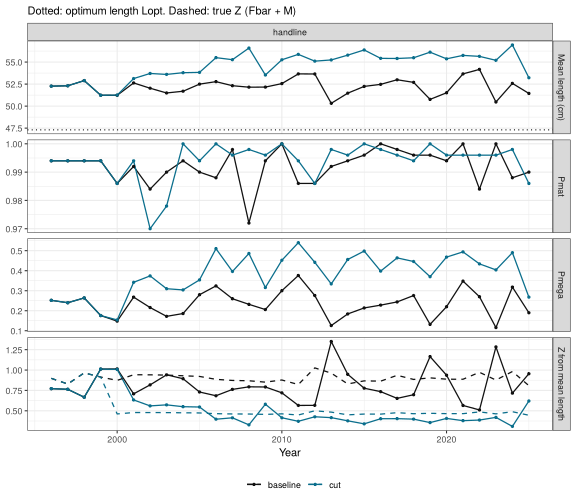
Why. True Z drops at once, but the length composition still holds the cohorts that lived through the high-F years. Large fish only reappear as the survivors grow, so mean length rises over several years. Z from mean length assumes equilibrium and lags behind the true Z: it signals continued overfishing after F has been cut. Non-equilibrium mean-length methods allow Z to change over time.
Card 3: a strong year class
Predict first. Recruitment in 2012 is eight times the average; F does not change. What happens to mean length in the handline catch over the next years? When does the survey see the year class, and when does the handline?
oem_s <- oem_settings(one_gear_fishery(1), tail = 30, lfd_ess_age = 50,
lfd_ess_len = 500,
survey = survey_settings(years = c(2000, 2025)))
c3 <- run_treatment(hl, one_gear_fishery(1),
list(pulse = treatment("strong 2012 year class", recruitment = list(
type = "pulse", years = 2012, mult = 8))),
nsim = 10, oem = oem_s, iters = 1:5)
plot_lfd(c3$data$pulse, "Lutjanus bohar", iter = 1, cohorts = TRUE)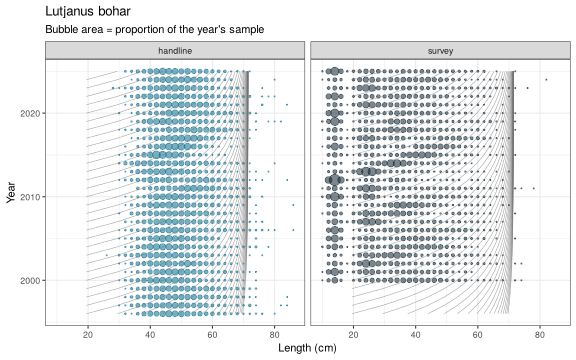
plot_length_indicators(length_indicators(c3, "Lutjanus bohar"))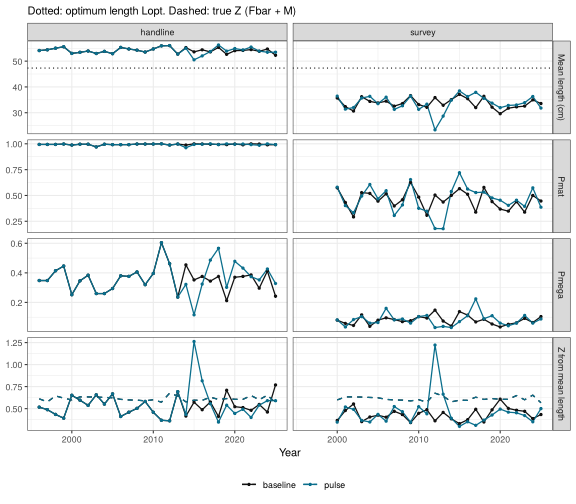
Why. The survey catches small fish and sees the year class at once. The handline only catches it once it reaches the length of first capture, a few years later (here about 2015). When it enters the catch, mean length falls and Z from mean length jumps, as if fishing had increased sharply. As the cohort grows, mean length rises again, as if the stock were recovering. F never changed. The check: the mode moves along a growth line year after year, and the survey showed the same year class earlier.
Card 4: recruitment declines
Predict first. From 2005 recruitment declines by 10% per year; F is unchanged. Does mean length go up or down? Does the stock look healthier or worse in the length data?
c4 <- run_treatment(hl, one_gear_fishery(1),
list(decline = treatment("recruitment -10% per year from 2005",
recruitment = list(type = "trend", from = 2005, rate = -0.10))),
nsim = 10, oem = oem_s, iters = 1:5)
plot_treatment(c4)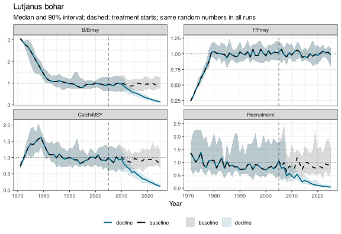
plot_length_indicators(length_indicators(c4, "Lutjanus bohar"))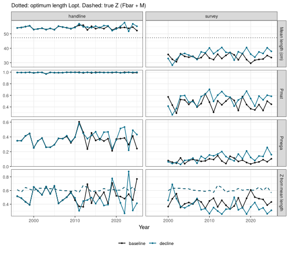
Warning flag. Fewer small fish raise the share of large fish and the mean length, while spawning biomass falls. Z from mean length drops below the true Z: the length data say “recovery” when the stock is declining. Look at indices of small fish (the survey) and of biomass (CPUE) before trusting mean length.
Card 5: two gears and a survey disagree
Predict first. A handline (catches fish from maturity, flat-topped) and a gillnet (catches a narrow band of mid-sized fish) fish the same stock, and a survey samples juveniles. Which gear shows the most large fish? Which gives the highest Z from mean length?
fy2 <- fishery(fleets = c("handline", "gillnet"), years = 1969:2025,
trends = list(handline = effort_trend("values", values = rep(0.5, 57)),
gillnet = effort_trend("values", values = rep(0.5, 57))),
sigmaE = 0.1)
sp2 <- species(sp$species, sp$common_name, lh = sp$lh, msy = sp$msy,
sel = list(handline = selectivity("logistic", L50 = 35, L95 = 42),
gillnet = selectivity("dnormal", Lpeak = 38, sd_left = 5,
sd_right = 6)),
relq = c(handline = 1, gillnet = 1))
om2 <- build_om(sp2, fy2, nsim = 5)
d2 <- sample_data(om2, oem_settings(fy2, tail = 20, lfd_ess_age = 50, lfd_ess_len = 500,
survey = survey_settings(years = c(2006, 2025))),
iters = 1)
plot_lfd(d2, "Lutjanus bohar")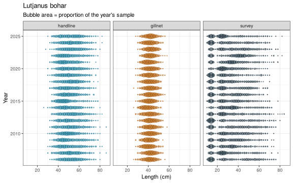
plot_length_indicators(length_indicators(d2, "Lutjanus bohar"))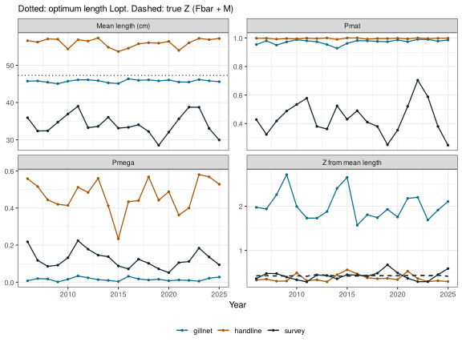
Why. One stock, one F, three different stories. The gillnet lets large fish escape: its length data lack the large fish whatever the F, so its mean length is low and Z from mean length is far too high. The handline is flat-topped and tracks the true Z. The survey mainly sees juveniles and reflects recruitment, not the fishing pressure on adults. Mean-length and catch-curve methods assume the descending limb is caused by mortality, not by selectivity.
Card 6: who reproduces and who is caught?
Predict first. In the reef fishery, traps and gillnets catch mainly juveniles and mid-sized fish, linefish mainly adults. If spawning biomass has fallen to a quarter of its starting level, what do trap CPUE and linefish CPUE show?
plot_ssb_vb(om_reef)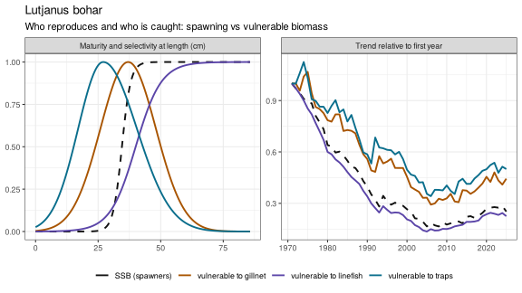
plot_ssb_vb(om2) # handline (adults) and dome gillnet (mid-sized fish)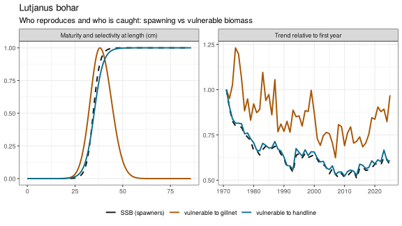
Why. A fleet’s catches and CPUE come from the fish it can catch, its vulnerable biomass, not from the spawning stock. Gears that catch fish below the size at maturity, or that let large spawners escape (dome-shaped selectivity), see a biomass that declines less (or differently) than the spawning stock. Their CPUE looks healthier than the reproductive potential of the stock. Only gears whose selectivity matches maturity track SSB.
Card 7: which indicator is lying?
Task. Below is one dataset of the reef fishery. One or more data problems have been planted. Which indicators do not tell the same story, and why?
fy_c <- reef_fishery(creep = c(traps = 0, gillnet = 0, linefish = 0.03))
om6 <- build_om(sp, fy_c, nsim = 5)
d6 <- sample_data(om6, reef_oem(fishery = fy_c,
survey = survey_settings(q_step = c(2012, 0.6))),
iters = 1)
plot_indicators(d6, "Lutjanus bohar")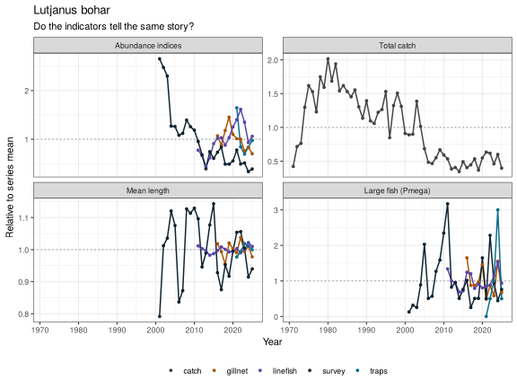
The answer (trainers only):
d6$settings$artefacts
#> artefact where detail
#> 1 effort creep in CPUE linefish 3.0% per year from 1969
#> 2 autocorrelated CPUE residuals linefish rho = 0.60
#> 3 survey catchability step survey x 0.60 from 2012
plot_indicators(d6, "Lutjanus bohar", truth = TRUE)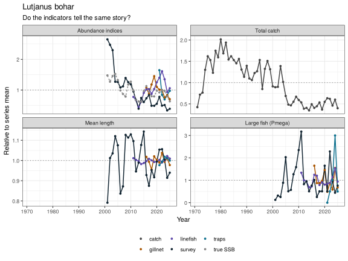
What gives it away. Linefish CPUE rises while catches fall and the survey declines: effort creep keeps CPUE up (hyperstability). The survey drops abruptly in 2012 while CPUE of other fleets does not: a step change in survey catchability, not a collapse. Real changes in abundance appear, with lags, in every index that can see the stock; artefacts appear in one.
References
Beverton, R.J.H. and Holt, S.J. (1956). A review of methods for estimating mortality rates in fish populations, with special reference to sources of bias in catch sampling. Rapp. P.-v. Réun. CIEM 140: 67–83.
Froese, R. (2004). Keep it simple: three indicators to deal with overfishing. Fish and Fisheries 5: 86–91.
Haddon, M. (2021). Using R for Modelling and Quantitative Methods in Fisheries. Chapman & Hall/CRC, The R Series.